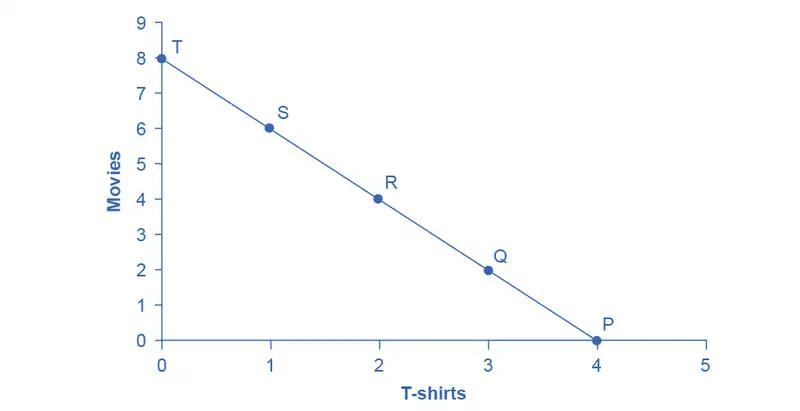
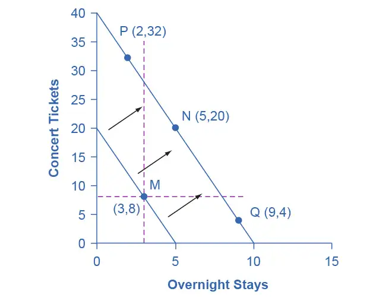
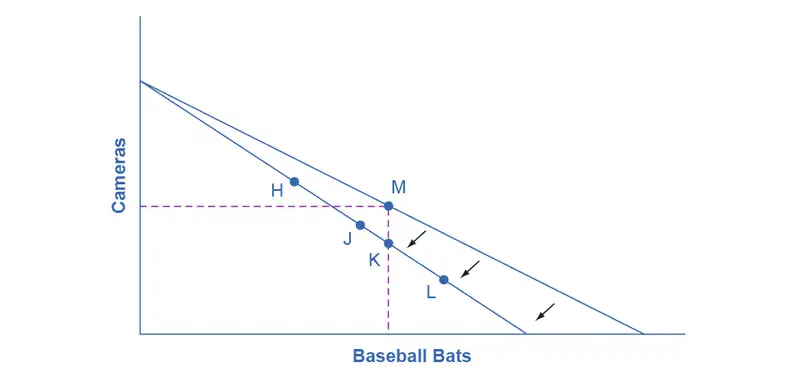
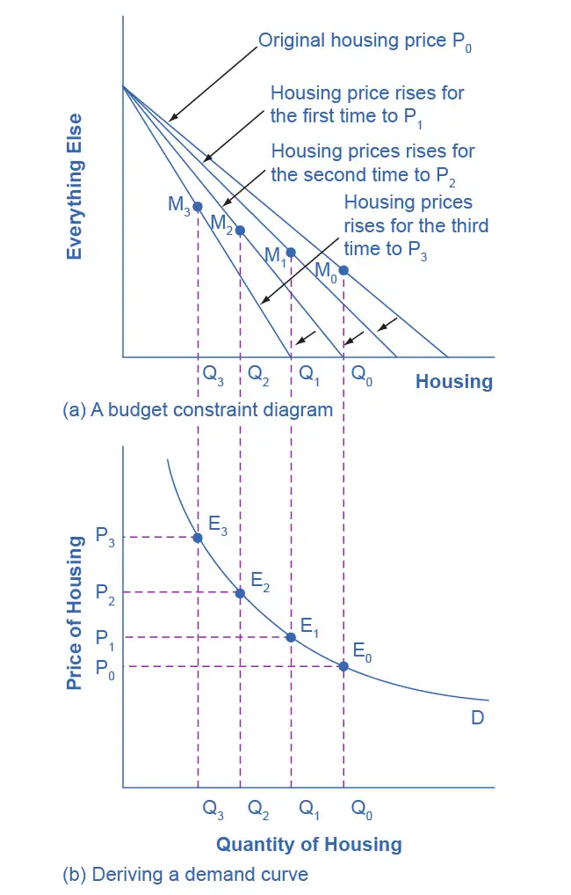

Chapter 6: Consumer Choices¶
Introduction¶
Bring It Home: Making Choices
The 2008–2009 Great Recession touched families around the globe. In too many countries, workers found themselves out of a job. In developed countries, unemployment compensation provided a safety net, but families still saw a marked decrease in disposable income and had to make tough spending decisions. Of course, non-essential, discretionary spending was the first to go.
Even so, there was one particular category that saw a universal increase in spending world-wide during that time—an 18% uptick in the United States, specifically. You might guess that consumers began eating more meals at home, increasing grocery store spending; however, the Bureau of Labor Statistics’ Consumer Expenditure Survey, which tracks U.S. food spending over time, showed “real total food spending by U.S. households declined five percent between 2006 and 2009.” So, it was not groceries. What product would people around the world demand more of during tough economic times, and more importantly, why? (Find out at chapter’s end.)
That question leads us to this chapter’s topic—analyzing how consumers make choices and how changes affect those choices. For instance, do changes in prices matter more or less than changes in a consumer’s income? Can a small change in circumstances alter the consumers’ perception of a product or even of their own resources? While many choices may seem straightforward, there is often much more to consider.
Chapter Outline: Introduction to Consumer Choices
In this chapter, you will learn about:
- Consumption Choices
- How Changes in Income and Prices Affect Consumption Choices
- How Consumer Choices Might Not Always be Rational
Microeconomics seeks to understand the behavior of individual economic agents such as individuals and businesses. Economists believe that we can analyze individuals’ decisions, such as what goods and services to buy, as choices we make within certain budget constraints. Generally, consumers are trying to get the most for their limited budget. In economic terms they are trying to maximize total utility, or satisfaction, given their budget constraint.
Everyone has their own personal tastes and preferences. The French say: Chacun à son goût, or “Each to his own taste.” An old Latin saying states, De gustibus non est disputandum or “There’s no disputing about taste.” If people base their decisions on their own tastes and personal preferences, however, then how can economists hope to analyze the choices consumers make?
An economic explanation for why people make different choices begins with accepting the proverbial wisdom that tastes are a matter of personal preference. However, economists also believe that the choices people make are influenced by their incomes, by the prices of goods and services they consume, and by factors like where they live. This chapter introduces the economic theory of how consumers make choices about what goods and services to buy with their limited income.
The analysis in this chapter will build on the budget constraint that we introduced in the Choice in a World of Scarcity chapter. This chapter will also illustrate how economic theory provides a tool to systematically look at the full range of possible consumption choices to predict how consumption responds to changes in prices or incomes. After reading this chapter, consult the appendix Indifference Curves to learn more about representing utility and choice through indifference curves.
6.1 Consumption Choices¶
Learning Objectives
By the end of this section, you will be able to:
- Calculate total utility
- Propose decisions that maximize utility
- Explain marginal utility and the significance of diminishing marginal utility
Information on the consumption choices of Americans is available from the Consumer Expenditure Survey carried out by the U.S. Bureau of Labor Statistics. Table 6.1 shows spending patterns for the average U.S. household in 2010. The first row shows income and, excluding taxes and personal savings, the second row shows that the average U.S. household spent $48,109 on consumption. The table then breaks down consumption into various categories. The average U.S. household spent roughly one-third of its consumption on shelter and other housing expenses, another one-third on food and vehicle expenses, and the rest on a variety of items, as shown. These patterns will vary for specific households by differing levels of family income, by geography, and by preferences.
Table 6.1 U.S. Consumption Choices in 2010 (Source: http://www.bls.gov/cex/csxann13.pdf)
| Average Household Income before Taxes | $62,481 |
|---|---|
| Average Annual Expenditures | $48,109 |
| Food at home | $3,264 |
| Food away from home | $2,505 |
| Housing | $16,557 |
| Apparel and services | $1,700 |
| Transportation | $7,677 |
| Healthcare | $3,157 |
| Entertainment | $2,504 |
| Education | $1,074 |
| Personal insurance and pensions | $5,357 |
| All else: alcohol, tobacco, reading, personal care, cash contributions, miscellaneous | $3,356 |
Total Utility and Diminishing Marginal Utility¶
To understand how a household will make its choices, economists look at what consumers can afford, as shown in a budget constraint (or budget line), and the total utility or satisfaction derived from those choices. In a budget constraint line, the quantity of one good is on the horizontal axis and the quantity of the other good on the vertical axis. The budget constraint line shows the various combinations of two goods that are affordable given consumer income. Consider José's situation, shown in Figure 6.2. José likes to collect T-shirts and watch movies.
In Figure 6.2 we show the quantity of T-shirts on the horizontal axis while we show the quantity of movies on the vertical axis. If José had unlimited income or goods were free, then he could consume without limit. However, José, like all of us, faces a budget constraint. José has a total of $56 to spend. The price of T-shirts is $14 and the price of movies is $7. Notice that the vertical intercept of the budget constraint line is at eight movies and zero T-shirts ($56/$7=8). The horizontal intercept of the budget constraint is four, where José spends of all of his money on T-shirts and no movies ($56/14=4). The slope of the budget constraint line is rise/run or –8/4=–2. The specific choices along the budget constraint line show the combinations of affordable T-shirts and movies.

José wishes to choose the combination that will provide him with the greatest utility, which is the term economists use to describe a person’s level of satisfaction or happiness with their choices.
Let’s begin with an assumption, which we will discuss in more detail later, that José can measure his own utility with something called utils. (It is important to note that you cannot make comparisons between the utils of individuals. If one person gets 20 utils from a cup of coffee and another gets 10 utils, this does not mean than the first person gets more enjoyment from the coffee than the other or that they enjoy the coffee twice as much. The reason why is that utils are subjective to an individual. The way one person measures utils is not the same as the way someone else does.) Table 6.2 shows how José’s utility is connected with his T-shirt or movie consumption. The first column of the table shows the quantity of T-shirts consumed. The second column shows the total utility, or total amount of satisfaction, that José receives from consuming that number of T-shirts. The most common pattern of total utility, in this example, is that consuming additional goods leads to greater total utility, but at a decreasing rate. The third column shows marginal utility, which is the additional utility provided by one additional unit of consumption. This equation for marginal utility is:
Notice that marginal utility diminishes as additional units are consumed, which means that each subsequent unit of a good consumed provides less additional utility. For example, the first T-shirt José picks is his favorite and it gives him an addition of 22 utils. The fourth T-shirt is just something to wear when all his other clothes are in the wash and yields only 18 additional utils. This is an example of the law of diminishing marginal utility, which holds that the additional utility decreases with each unit added. Diminishing marginal utility is another example of the more general law of diminishing returns we learned earlier in the chapter on Choice in a World of Scarcity.
The rest of Table 6.2 shows the quantity of movies that José attends, and his total and marginal utility from seeing each movie. Total utility follows the expected pattern: it increases as the number of movies that José watches rises. Marginal utility also follows the expected pattern: each additional movie brings a smaller gain in utility than the previous one. The first movie José attends is the one he wanted to see the most, and thus provides him with the highest level of utility or satisfaction. The fifth movie he attends is just to kill time. Notice that total utility is also the sum of the marginal utilities. Read the next Work It Out feature for instructions on how to calculate total utility.
Table 6.2 Total and Marginal Utility
| T-Shirts (Quantity) | Total Utility | Marginal Utility | Movies (Quantity) | Total Utility | Marginal Utility |
|---|---|---|---|---|---|
| 1 | 22 | 22 | 1 | 16 | 16 |
| 2 | 43 | 21 | 2 | 31 | 15 |
| 3 | 63 | 20 | 3 | 45 | 14 |
| 4 | 81 | 18 | 4 | 58 | 13 |
| 5 | 97 | 16 | 5 | 70 | 12 |
| 6 | 111 | 14 | 6 | 81 | 11 |
| 7 | 123 | 12 | 7 | 91 | 10 |
| 8 | 133 | 10 | 8 | 100 | 9 |
Table 6.3 looks at each point on the budget constraint in Figure 6.2, and adds up José’s total utility for five possible combinations of T-shirts and movies.
Table 6.3 Finding the Choice with the Highest Utility
| Point | T-Shirts | Movies | Total Utility |
|---|---|---|---|
| P | 4 | 0 | 81 + 0 = 81 |
| Q | 3 | 2 | 63 + 31 = 94 |
| R | 2 | 4 | 43 + 58 = 101 |
| S | 1 | 6 | 22 + 81 = 103 |
| T | 0 | 8 | 0 + 100 = 100 |
Work It Out: Calculating Total Utility
Let’s look at how José makes his decision in more detail.
Step 1. Observe that, at point Q (for example), José consumes three T-shirts and two movies.
Step 2. Look at Table 6.2. You can see from the third row/second column that three T-shirts are worth 63 utils. Similarly, the second row/fifth column shows that two movies are worth 31 utils.
Step 3. From this information, you can calculate that point Q has a total utility of 94 (63 + 31).
Step 4. You can repeat the same calculations for each point on Table 6.3, in which the total utility numbers are shown in the last column.
For José, the highest total utility for all possible combinations of goods occurs at point S, with a total utility of 103 from consuming one T-shirt and six movies.
Choosing with Marginal Utility¶
Most people approach their utility-maximizing combination of choices in a step-by-step way. This approach is based on looking at the tradeoffs, measured in terms of marginal utility, of consuming less of one good and more of another.
For example, say that José starts off thinking about spending all his money on T-shirts and choosing point P, which corresponds to four T-shirts and no movies, as Figure 6.2 illustrates. José chooses this starting point randomly as he has to start somewhere. Then he considers giving up the last T-shirt, the one that provides him the least marginal utility, and using the money he saves to buy two movies instead. Table 6.4 tracks the step-by-step series of decisions José needs to make (Key: T-shirts are $14, movies are $7, and income is $56). The following Work It Out feature explains how marginal utility can affect decision making.
Table 6.4 A Step-by-Step Approach to Maximizing Utility
| Try | Which Has | Total Utility | Marginal Gain and Loss of Utility, Compared with Previous Choice | Conclusion |
|---|---|---|---|---|
| Choice 1: P | 4 T-shirts and 0 movies | 81 from 4 T-shirts + 0 from 0 movies = 81 | – | – |
| Choice 2: Q | 3 T-shirts and 2 movies | 63 from 3 T-shirts + 31 from 2 movies = 94 | Loss of 18 from 1 less T-shirt, but gain of 31 from 2 more movies, for a net utility gain of 13 | Q is preferred over P |
| Choice 3: R | 2 T-shirts and 4 movies | 43 from 2 T-shirts + 58 from 4 movies = 101 | Loss of 20 from 1 less T-shirt, but gain of 27 from two more movies for a net utility gain of 7 | R is preferred over Q |
| Choice 4: S | 1 T-shirt and 6 movies | 22 from 1 T-shirt + 81 from 6 movies = 103 | Loss of 21 from 1 less T-shirt, but gain of 23 from two more movies, for a net utility gain of 2 | S is preferred over R |
| Choice 5: T | 0 T-shirts and 8 movies | 0 from 0 T-shirts + 100 from 8 movies = 100 | Loss of 22 from 1 less T-shirt, but gain of 19 from two more movies, for a net utility loss of 3 | S is preferred over T |
Work It Out: Decision Making by Comparing Marginal Utility
José could use the following thought process (if he thought in utils) to make his decision regarding how many T-shirts and movies to purchase:
Step 1. From Table 6.2, José can see that the marginal utility of the fourth T-shirt is 18. If José gives up the fourth T-shirt, then he loses 18 utils.
Step 2. Giving up the fourth T-shirt, however, frees up $14 (the price of a T-shirt), allowing José to buy the first two movies (at $7 each).
Step 3. José knows that the marginal utility of the first movie is 16 and the marginal utility of the second movie is 15. Thus, if José moves from point P to point Q, he gives up 18 utils (from the T-shirt), but gains 31 utils (from the movies).
Step 4. Gaining 31 utils and losing 18 utils is a net gain of 13. This is just another way of saying that the total utility at Q (94 according to the last column in Table 6.3) is 13 more than the total utility at P (81).
Step 5. Thus, for José, it makes sense to give up the fourth T-shirt in order to buy two movies.
José clearly prefers point Q to point P. Now repeat this step-by-step process of decision making with marginal utilities. José thinks about giving up the third T-shirt and surrendering a marginal utility of 20, in exchange for purchasing two more movies that promise a combined marginal utility of 27. José prefers point R to point Q. What if José thinks about going beyond R to point S? Giving up the second T-shirt means a marginal utility loss of 21, and the marginal utility gain from the fifth and sixth movies would combine to make a marginal utility gain of 23, so José prefers point S to R.
However, if José seeks to go beyond point S to point T, he finds that the loss of marginal utility from giving up the first T-shirt is 22, while the marginal utility gain from the last two movies is only a total of 19. If José were to choose point T, his utility would fall to 100. Through these stages of thinking about marginal tradeoffs, José again concludes that S, with one T-shirt and six movies, is the choice that will provide him with the highest level of total utility. This step-by-step approach will reach the same conclusion regardless of José’s starting point.
We can develop a more systematic way of using this approach by focusing on satisfaction per dollar. If an item costing $5 yields 10 utils, then it’s worth 2 utils per dollar spent. Marginal utility per dollar is the amount of additional utility José receives divided by the product's price. Table 6.5 shows the marginal utility per dollar for José's T shirts and movies.
If José wants to maximize the utility he gets from his limited budget, he will always purchase the item with the greatest marginal utility per dollar of expenditure (assuming he can afford it with his remaining budget). José starts with no purchases. If he purchases a T-shirt, the marginal utility per dollar spent will be 1.6. If he purchases a movie, the marginal utility per dollar spent will be 2.3. Therefore, José’s first purchase will be the movie. Why? Because it gives him the highest marginal utility per dollar and is affordable. Next, José will purchase another movie. Why? Because the marginal utility of the next movie (2.14) is greater than the marginal utility of the next T-shirt (1.6). Note that when José has no T- shirts, the next one is the first one. José will continue to purchase the next good with the highest marginal utility per dollar until he exhausts his budget. He will continue purchasing movies because they give him a greater "bang for the buck" until the sixth movie which gives the same marginal utility per dollar as the first T-shirt purchase. José has just enough budget to purchase both. So in total, José will purchase six movies and one T-shirt.
Table 6.5 Marginal Utility per Dollar
| Quantity of T-Shirts | Total Utility | Marginal Utility | Marginal Utility per Dollar | Quantity of Movies | Total Utility | Marginal Utility | Marginal Utility per Dollar |
|---|---|---|---|---|---|---|---|
| 1 | 22 | 22 | 22/$14=1.6 | 1 | 16 | 16 | 16/$7=2.3 |
| 2 | 43 | 21 | 21/$14=1.5 | 2 | 31 | 15 | 15/$7=2.14 |
| 3 | 63 | 20 | 20/$14=1.4 | 3 | 45 | 14 | 14/$7=2 |
| 4 | 81 | 18 | 18/$14=1.3 | 4 | 58 | 13 | 13/$7=1.9 |
| 5 | 97 | 16 | 16/$14=1.1 | 5 | 70 | 12 | 12/$7=1.7 |
| 6 | 111 | 14 | 14/$14=1 | 6 | 81 | 11 | 11/$7=1.6 |
| 7 | 123 | 12 | 12/$14=1.2 | 7 | 91 | 10 | 10/$7=1.4 |
A Rule for Maximizing Utility¶
This process of decision making suggests a rule to follow when maximizing utility. Since the price of T-shirts is twice as high as the price of movies, to maximize utility the last T-shirt that José chose needs to provide exactly twice the marginal utility (MU) of the last movie. If the last T-shirt provides less than twice the marginal utility of the last movie, then the T-shirt is providing less “bang for the buck” (i.e., marginal utility per dollar spent) than José would receive from spending the same money on movies. If this is so, José should trade the T-shirt for more movies to increase his total utility.
If the last T-shirt provides more than twice the marginal utility of the last movie, then the T-shirt is providing more “bang for the buck” or marginal utility per dollar, than if the money were spent on movies. As a result, José should buy more T-shirts. Notice that at José’s optimal choice of point S, the marginal utility from the first T-shirt, of 22 is exactly twice the marginal utility of the sixth movie, which is 11. At this choice, the marginal utility per dollar is the same for both goods. This is a tell-tale signal that José has found the point with highest total utility.
We can write this argument as a general rule: If you always choose the item with the greatest marginal utility per dollar spent, when your budget is exhausted, the utility maximizing choice should occur where the marginal utility per dollar spent is the same for both goods.
A sensible economizer will pay twice as much for something only if, in the marginal comparison, the item confers twice as much utility. Notice that the formula for the table above is:
The following Work It Out feature provides step by step guidance for this concept of utility-maximizing choices.
Work It Out: Maximizing Utility
The general rule, \(\begin{array}{rcl} \frac{\text{MU}_{1}}{\text{P}_{1}} & = & \frac{\text{MU}_{2}}{\text{P}_{2}} \end{array}\), means that the last dollar spent on each good provides exactly the same marginal utility. This is the case at point S. So:
Step 1. If we traded a dollar more of movies for a dollar more of T-shirts, the marginal utility gained from T-shirts would exactly offset the marginal utility lost from fewer movies. In other words, the net gain would be zero.
Step 2. Products, however, usually cost more than a dollar, so we cannot trade a dollar’s worth of movies. The best we can do is trade two movies for another T-shirt, since in this example T-shirts cost twice what a movie does.
Step 3. If we trade two movies for one T-shirt, we would end up at point R (two T-shirts and four movies).
Step 4. Choice 4 in Table 6.4 shows that if we move to point R, we would gain 21 utils from one more T-shirt, but lose 23 utils from two fewer movies, so we would end up with less total utility at point R.
In short, the general rule shows us the utility-maximizing choice, which is called the consumer equilibrium.
There is another equivalent way to think about this. We can also express the general rule as the ratio of the prices of the two goods should be equal to the ratio of the marginal utilities. When we divide the price of good 1 by the price of good 2, at the utility-maximizing point this will equal the marginal utility of good 1 divided by the marginal utility of good 2.
Along the budget constraint, the total price of the two goods remains the same, so the ratio of the prices does not change. However, the marginal utility of the two goods changes with the quantities consumed. At the optimal choice of one T-shirt and six movies, point S, the ratio of marginal utility to price for T-shirts (22:14) matches the ratio of marginal utility to price for movies (of 11:7).
Measuring Utility with Numbers¶
This discussion of utility began with an assumption that it is possible to place numerical values on utility, an assumption that may seem questionable. You can buy a thermometer for measuring temperature at the hardware store, but what store sells a “utilimometer” for measuring utility? While measuring utility with numbers is a convenient assumption to clarify the explanation, the key assumption is not that an outside party can measure utility but only that individuals can decide which of two alternatives they prefer.
To understand this point, think back to the step-by-step process of finding the choice with highest total utility by comparing the marginal utility you gain and lose from different choices along the budget constraint. As José compares each choice along his budget constraint to the previous choice, what matters is not the specific numbers that he places on his utility—or whether he uses any numbers at all—but only that he personally can identify which choices he prefers.
In this way, the step-by-step process of choosing the highest level of utility resembles rather closely how many people make consumption decisions. We think about what will make us the happiest. We think about what things cost. We think about buying a little more of one item and giving up a little of something else. We choose what provides us with the greatest level of satisfaction. The vocabulary of comparing the points along a budget constraint and total and marginal utility is just a set of tools for discussing this everyday process in a clear and specific manner. It is welcome news that specific utility numbers are not central to the argument, since a good utilimometer is hard to find. Do not worry—while we cannot measure utils, by the end of the next module, we will have transformed our analysis into something we can measure—demand.
6.2 How Changes in Income and Prices Affect Consumption Choices¶
Learning Objectives
By the end of this section, you will be able to:
- Explain how income, prices, and preferences affect consumer choices
- Contrast the substitution effect and the income effect
- Utilize concepts of demand to analyze consumer choices
- Apply utility-maximizing choices to governments and businesses
Just as we can use utility and marginal utility to discuss making consumer choices along a budget constraint, we can also use these ideas to think about how consumer choices change when the budget constraint shifts in response to changes in income or price. Because we can use the budget constraint framework to analyze how quantities demanded change because of price movements, the budget constraint model can illustrate the underlying logic behind demand curves.
How Changes in Income Affect Consumer Choices¶
Let’s begin with a concrete example illustrating how changes in income level affect consumer choices. Figure 6.3 shows a budget constraint that represents Kimberly’s choice between concert tickets at $50 each and getting away overnight to a bed-and-breakfast for $200 per night. Kimberly has $1,000 per year to spend between these two choices. After thinking about her total utility and marginal utility and applying the decision rule that the ratio of the marginal utilities to the prices should be equal between the two products, Kimberly chooses point M, with eight concerts and three overnight getaways as her utility-maximizing choice.

Now, assume that the income Kimberly has to spend on these two items rises to $2,000 per year, causing her budget constraint to shift out to the right. How does this rise in income alter her utility-maximizing choice? Kimberly will again consider the utility and marginal utility that she receives from concert tickets and overnight getaways and seek her utility-maximizing choice on the new budget line, but how will her new choice relate to her original choice?
We can replace the possible choices along the new budget constraint into three groups, which the dashed horizontal and vertical lines that pass through the original choice M in the figure divide. All choices on the upper left of the new budget constraint that are to the left of the vertical dashed line, like choice P with two overnight stays and 32 concert tickets, involve less of the good on the horizontal axis but much more of the good on the vertical axis. All choices to the right of the vertical dashed line and above the horizontal dashed line—like choice N with five overnight getaways and 20 concert tickets—have more consumption of both goods. Finally, all choices that are to the right of the vertical dashed line but below the horizontal dashed line, like choice Q with four concerts and nine overnight getaways, involve less of the good on the vertical axis but much more of the good on the horizontal axis.
All of these choices are theoretically possible, depending on Kimberly’s personal preferences as expressed through the total and marginal utility she would receive from consuming these two goods. When income rises, the most common reaction is to purchase more of both goods, like choice N, which is to the upper right relative to Kimberly’s original choice M, although exactly how much more of each good will vary according to personal taste. Conversely, when income falls, the most typical reaction is to purchase less of both goods. As we defined in the chapter on Demand and Supply and again in the chapter on Elasticity, we call goods and services normal goods when a rise in income leads to a rise in the quantity consumed of that good and a fall in income leads to a fall in quantity consumed.
However, depending on Kimberly’s preferences, a rise in income could cause consumption of one good to increase while consumption of the other good declines. A choice like P means that a rise in income caused her quantity consumed of overnight stays to decline, while a choice like Q would mean that a rise in income caused her quantity of concerts to decline. Goods where demand declines as income rises (or conversely, where the demand rises as income falls) are called “inferior goods.” An inferior good occurs when people trim back on a good as income rises, because they can now afford the more expensive choices that they prefer. For example, a higher-income household might eat fewer hamburgers or be less likely to buy a used car, and instead eat more steak and buy a new car.
How Price Changes Affect Consumer Choices¶
For analyzing the possible effect of a change in price on consumption, let’s again use a concrete example. Figure 6.4 represents Sergei's consumer choice, who chooses between purchasing baseball bats and cameras. A price increase for baseball bats would have no effect on the ability to purchase cameras, but it would reduce the number of bats Sergei could afford to buy. Thus a price increase for baseball bats, the good on the horizontal axis, causes the budget constraint to rotate inward, as if on a hinge, from the vertical axis. As in the previous section, the point labeled M represents the originally preferred point on the original budget constraint, which Sergei has chosen after contemplating his total utility and marginal utility and the tradeoffs involved along the budget constraint. In this example, the units along the horizontal and vertical axes are not numbered, so the discussion must focus on whether Sergei will consume more or less of certain goods, not on numerical amounts.

After the price increase, Sergei will make a choice along the new budget constraint. Again, we can divide his choices into three segments by the dashed vertical and horizontal lines. In the upper left portion of the new budget constraint, at a choice like H, Sergei consumes more cameras and fewer bats. In the central portion of the new budget constraint, at a choice like J, he consumes less of both goods. At the right-hand end, at a choice like L, he consumes more bats but fewer cameras.
The typical response to higher prices is that a person chooses to consume less of the product with the higher price. This occurs for two reasons, and both effects can occur simultaneously. The substitution effect occurs when a price changes and consumers have an incentive to consume less of the good with a relatively higher price and more of the good with a relatively lower price. The income effect is that a higher price means, in effect, the buying power of income has been reduced (even though actual income has not changed), which leads to buying less of the good (when the good is normal). In this example, the higher price for baseball bats would cause Sergei to buy fewer bats for both reasons. Exactly how much will a higher price for bats cause Sergei's bat consumption to fall? Figure 6.4 suggests a range of possibilities. Sergei might react to a higher price for baseball bats by purchasing the same quantity of bats, but cutting his camera consumption. This choice is the point K on the new budget constraint, straight below the original choice M. Alternatively, Sergei might react by dramatically reducing his bat purchases and instead buy more cameras.
The key is that it would be imprudent to assume that a change in the price of one good will only affect consumption of that good. In our example, since Sergei purchases all his products out of the same budget, a change in the price of baseball bats can also have a range of effects, either positive or negative, on his purchases of cameras.
In short, a higher price typically causes reduced consumption of the good in question, but it can affect the consumption of other goods as well.
Link It Up
Read this article about the potential of variable prices in vending machines.
The Foundations of Demand Curves¶
Changes in the price of a good lead the budget constraint to rotate. A rotation in the budget constraint means that when individuals are seeking their highest utility, the quantity that is demanded of that good will change. In this way, the logical foundations of demand curves—which show a connection between prices and quantity demanded—are based on the underlying idea of individuals seeking utility. Figure 6.5 (a) shows a budget constraint with a choice between housing and “everything else.” (Putting “everything else” on the vertical axis can be a useful approach in some cases, especially when the focus of the analysis is on one particular good.) We label the preferred choice on the original budget constraint that provides the highest possible utility M0. The other three budget constraints represent successively higher prices for housing of P1, P2, and P3. As the budget constraint rotates in, and in, and in again, we label the utility-maximizing choices M1, M2, and M3, and the quantity demanded of housing falls from Q0 to Q1 to Q2 to Q3.

Thus, as the price of housing rises, the budget constraint rotates clockwise and the quantity consumed of housing falls, ceteris paribus (meaning, with all other things being the same). We graph this relationship—the price of housing rising from P0 to P1 to P2 to P3, while the quantity of housing demanded falls from Q0 to Q1 to Q2 to Q3—on the demand curve in Figure 6.5 (b). The vertical dashed lines stretching between the top and bottom of Figure 6.5 show that the quantity of housing demanded at each point is the same in both (a) and (b). We ultimately determine the shape of a demand curve by the underlying choices about maximizing utility subject to a budget constraint. While economists may not be able to measure “utils,” they can certainly measure price and quantity demanded.
Applications in Government and Business¶
The budget constraint framework for making utility-maximizing choices offers a reminder that people can react to a change in price or income in a range of different ways. For example, in the winter months of 2005, costs for heating homes increased significantly in many parts of the country as prices for natural gas and electricity soared, due in large part to the disruption caused by Hurricanes Katrina and Rita. Some people reacted by reducing the quantity demanded of energy; for example, by turning down the thermostats in their homes by a few degrees and wearing a heavier sweater inside. Even so, many home heating bills rose, so people adjusted their consumption in other ways, too. As you learned in the chapter on Elasticity, the short run demand for home heating is generally inelastic. Each household cut back on what it valued least on the margin. For some it might have been some dinners out, or a vacation, or postponing buying a new refrigerator or a new car. Sharply higher energy prices can have effects beyond the energy market, leading to a widespread reduction in purchasing throughout the rest of the economy.
A similar issue arises when the government imposes taxes on certain products, such as on gasoline, cigarettes, and alcohol. Say that a tax on alcohol leads to a higher price at the liquor store. The higher price of alcohol causes the budget constraint to pivot left, and alcoholic beverage consumption is likely to decrease. However, people may also react to the higher price of alcoholic beverages by cutting back on other purchases. For example, they might cut back on snacks at restaurants like chicken wings and nachos. It would be unwise to assume that the liquor industry is the only one affected by the tax on alcoholic beverages. Read the next Clear It Up to learn about how who controls the household income influences buying decisions.
The Unifying Power of the Utility-Maximizing Budget Set Framework¶
An interaction between prices, budget constraints, and personal preferences determine household choices. The flexible and powerful terminology of utility-maximizing gives economists a vocabulary for bringing these elements together.
Not even economists believe that people walk around mumbling about their marginal utilities before they walk into a shopping mall, accept a job, or make a deposit in a savings account. However, economists do believe that individuals seek their own satisfaction or utility and that people often decide to try a little less of one thing and a little more of another. If we accept these assumptions, then the idea of utility-maximizing households facing budget constraints becomes highly plausible.
Clear It Up: Does who controls household income make a difference?
In the mid-1970s, the United Kingdom made an interesting policy change in its “child allowance” policy. This program provides a fixed amount of money per child to every family, regardless of family income. Traditionally, the child allowance had been distributed to families by withholding less in taxes from the paycheck of the family wage earner—typically the father in this time period. The new policy instead provided the child allowance as a cash payment to the mother. As a result of this change, households have the same level of income and face the same prices in the market, but the money is more likely to be in the mother's purse than in the father's wallet.
Should this change in policy alter household consumption patterns? Basic models of consumption decisions, of the sort that we examined in this chapter, assume that it does not matter which parent or guardian receives the money, because both seek to maximize the family's utility as a whole. In effect, this model assumes that everyone in the family has the same makeup or has the same preferences.
There has not been extensive research on diverse family structures and guardian/parent sex and gender related to spending. However, the older research on families with one man and one woman parent indicates that gender does affect spending decisions. When the mother controls a larger share of family income a number of studies, in the United Kingdom and in a wide variety of other countries, have found that the family tends to spend more on restaurant meals, child care, and women’s clothing, and less on alcohol and tobacco. As the mother controls a larger share of household resources, children’s health improves, too. These findings suggest that when providing assistance to families, in high-income countries and low-income countries alike, the monetary amount of assistance is not all that matters: it also matters which family member actually receives the money.
The budget constraint framework serves as a constant reminder to think about the full range of effects that can arise from changes in income or price, not just effects on the one product that might seem most immediately affected.
6.3 Behavioral Economics: An Alternative Framework for Consumer Choice¶
Learning Objectives
By the end of this section, you will be able to:
- Evaluate the reasons for making intertemporal choices
- Interpret an intertemporal budget constraint
- Analyze why people in America tend to save such a small percentage of their income
As we know, people sometimes make decisions that seem “irrational” and not in their own best interest. People’s decisions can seem inconsistent from one day to the next and they even deliberately ignore ways to save money or time. The traditional economic models assume rationality, which means that people take all available information and make consistent and informed decisions that are in their best interest. (In fact, economics professors often delight in pointing out so-called “irrational behavior” each semester to their new students, and present economics as a way to become more rational.)
However, a new group of economists, known as behavioral economists, argue that the traditional method omits something important: people’s state of mind. For example, one can think differently about money if one is feeling revenge, optimism, or loss. These are not necessarily irrational states of mind, but part of a range of emotions that can affect anyone on a given day. In addition, actions under these conditions are predictable, if one better understands the underlying environment. Behavioral economics seeks to enrich our understanding of decision-making by integrating the insights of psychology into economics. It does this by investigating how given dollar amounts can mean different things to individuals depending on the situation. This can lead to decisions that appear outwardly inconsistent, or irrational, to the outside observer.
The way the mind works, according to this view, may seem inconsistent to traditional economists but is actually far more complex than an unemotional cost-benefit adding machine. For example, a traditional economist would say that if you lost a $10 bill today, and also received an extra $10 in your paycheck, you should feel perfectly neutral. After all, –$10 + $10 = $0. You are the same financially as you were before. However, behavioral economists have conducted research that shows many people will feel some negative emotion, such as anger or frustration, after those two things happen. We tend to focus more on the loss than the gain. We call this loss aversion, where a $1 loss pains us 2.25 times more than a $1 gain helps us, according to the economists Daniel Kahneman and Amos Tversky in a famous 1979 article in the journal Econometrica. This insight has implications for investing, as people tend to “overplay” the stock market by reacting more to losses than to gains. This behavior looks irrational to traditional economists, but is consistent once we understand better how the mind works, these economists argue.
Traditional economists also assume human beings have complete self control, but, for instance, people will buy cigarettes by the pack instead of the carton even though the carton saves them money, to keep usage down. They purchase locks for their refrigerators and overpay on taxes to force themselves to save. In other words, we protect ourselves from our worst temptations but pay a price to do so. One way behavioral economists are responding to this is by establishing ways for people to keep themselves free of these temptations. This includes what we call “nudges” toward more rational behavior rather than mandatory regulations from government. For example, up to 20 percent of new employees do not enroll in retirement savings plans immediately, because of procrastination or feeling overwhelmed by the different choices. Some companies are now moving to a new system, where employees are automatically enrolled unless they “opt out.” Almost no-one opts out in this program and employees begin saving at the early years, which are most critical for retirement.
Another area that seems illogical is the idea of mental accounting, or putting dollars in different mental categories where they take different values. Economists typically consider dollars to be fungible, or having equal value to the individual, regardless of the situation.
You might, for instance, think of the $25 you found in the street differently from the $25 you earned from three hours working in a fast food restaurant. You might treat the street money as “mad money” with little rational regard to getting the best value. This is in one sense strange, since it is still equivalent to three hours of hard work in the restaurant. Yet the “easy come-easy go” mentality replaces the rational economizer because of the situation, or context, in which you attained the money.
In another example of mental accounting that seems inconsistent to a traditional economist, a person could carry a credit card debt of $1,000 that has a 15% yearly interest cost, and simultaneously have a $2,000 savings account that pays only 2% per year. That means she pays $150 a year to the credit card company, while collecting only $40 annually in bank interest, so she loses $110 a year. That doesn’t seem wise.
The “rational” decision would be to pay off the debt, since a $1,000 savings account with $0 in debt is the equivalent net worth, and she would now net $20 per year. Curiously, it is not uncommon for people to ignore this advice, since they will treat a loss to their savings account as higher than the benefit of paying off their credit card. They do not treat the dollars as fungible so it looks irrational to traditional economists.
Which view is right, the behavioral economists’ or the traditional view? Both have their advantages, but behavioral economists have at least identified trying to describe and explain behavior that economists have historically dismissed as irrational. If most of us are engaged in some “irrational behavior,” perhaps there are deeper underlying reasons for this behavior in the first place.
Bring It Home: Making Choices
In what category did consumers worldwide increase their spending during the Great Recession? Higher education. According to the United Nations Educational, Scientific, and Cultural Organization (UNESCO), enrollment in colleges and universities rose one-third in China and almost two-thirds in Saudi Arabia, nearly doubled in Pakistan, tripled in Uganda, and surged by three million—18 percent—in the United States. Why were consumers willing to spend on education during lean times? Both individuals and countries view higher education as the way to prosperity. Many feel that increased earnings are a significant benefit of attending college.
U.S. Bureau of Labor Statistics data from May 2012 supports this view, as Figure 6.6 shows. They show a positive correlation between earnings and education. The data also indicate that unemployment rates fall with higher levels of education and training.
Why spend the money to go to college during recession? Because if you are unemployed (or underemployed, working fewer hours than you would like), the opportunity cost of your time is low. If you’re unemployed, you don’t have to give up work hours and income by going to college.
![The graph shows the unemployment rate and median weekly earnings in 2012 for various levels of education. People with professional degrees made around $1,735 a week and suffered a 2.1% unemployment rate. People with doctoral degrees made around $1,624 a week and suffered a 2.5% unemployment rate. People with Master’s degrees made around $1,300 a week and suffered a 3.5% unemployment rate. People with Bachelor’s degrees made around $1,066 a week and suffered a 4.5% unemployment rate. People with Associate’s degrees made around $785 a week and suffered a 6.2% unemployment rate. People with some college, no degree made around $727 a week and suffered a 7.7% unemployment rate. People with a high school diploma made around $652 a week and suffered an 8.3% unemployment rate. People with less than a high school diploma made around $471 a week and suffered a 12.4% unemployment rate.](img/cnx-econ-c06-010.webp)
Chapter Review¶
Key Terms¶
- behavioral economics
- a branch of economics that seeks to enrich the understanding of decision-making by integrating the insights of psychology and by investigating how given dollar amounts can mean different things to individuals depending on the situation
- budget constraint (or budget line)
- shows the possible combinations of two goods that are affordable given a consumer’s limited income
- consumer equilibrium
- point on the budget line where the consumer gets the most satisfaction; this occurs when the ratio of the prices of goods is equal to the ratio of the marginal utilities.
- diminishing marginal utility
- the common pattern that each marginal unit of a good consumed provides less of an addition to utility than the previous unit
- fungible
- the idea that units of a good, such as dollars, ounces of gold, or barrels of oil are capable of mutual substitution with each other and carry equal value to the individual
- income effect
- a higher price means that, in effect, the buying power of income has been reduced, even though actual income has not changed; always happens simultaneously with a substitution effect
- marginal utility
- the additional utility provided by one additional unit of consumption
- marginal utility per dollar
- the additional satisfaction gained from purchasing a good given the price of the product; MU/Price
- substitution effect
- when a price changes, consumers have an incentive to consume less of the good with a relatively higher price and more of the good with a relatively lower price; always happens simultaneously with an income effect
- total utility
- satisfaction derived from consumer choices
Key Concepts and Summary¶
6.1 Consumption Choices¶
Economic analysis of household behavior is based on the assumption that people seek the highest level of utility or satisfaction. Individuals are the only judge of their own utility. In general, greater consumption of a good brings higher total utility. However, the additional utility people receive from each unit of greater consumption tends to decline in a pattern of diminishing marginal utility.
We can find the utility-maximizing choice on a consumption budget constraint in several ways. You can add up total utility of each choice on the budget line and choose the highest total. You can select a starting point at random and compare the marginal utility gains and losses of moving to neighboring points—and thus eventually seek out the preferred choice. Alternatively, you can compare the ratio of the marginal utility to price of good 1 with the marginal utility to price of good 2 and apply the rule that at the optimal choice, the two ratios should be equal:
6.2 How Changes in Income and Prices Affect Consumption Choices¶
The budget constraint framework suggest that when income or price changes, a range of responses are possible. When income rises, households will demand a higher quantity of normal goods, but a lower quantity of inferior goods. When the price of a good rises, households will typically demand less of that good—but whether they will demand a much lower quantity or only a slightly lower quantity will depend on personal preferences. Also, a higher price for one good can lead to more or less demand of the other good.
6.3 Behavioral Economics: An Alternative Framework for Consumer Choice¶
People regularly make decisions that seem less than rational, decisions that contradict traditional consumer theory. This is because traditional theory ignores people’s state of mind or feelings, which can influence behavior. For example, people tend to value a dollar lost more than a dollar gained, even though the amounts are the same. Similarly, many people over withhold on their taxes, essentially giving the government a free loan until they file their tax returns, so that they are more likely to get money back than have to pay money on their taxes.
Self-Check Questions¶
6.1 Consumption Choices¶
1. Jeremy is deeply in love with Jasmine. Jasmine lives where cell phone coverage is poor, so he can either call her on the land-line phone for five cents per minute or he can drive to see her, at a round-trip cost of $2 in gasoline money. He has a total of $10 per week to spend on staying in touch. To make his preferred choice, Jeremy uses a handy utilimometer that measures his total utility from personal visits and from phone minutes. Using the values in Table 6.6, figure out the points on Jeremy’s consumption choice budget constraint (it may be helpful to do a sketch) and identify his utility-maximizing point.
Table 6.6
| Round Trips | Total Utility | Phone Minutes | Total Utility |
|---|---|---|---|
| 0 | 0 | 0 | 0 |
| 1 | 80 | 20 | 200 |
| 2 | 150 | 40 | 380 |
| 3 | 210 | 60 | 540 |
| 4 | 260 | 80 | 680 |
| 5 | 300 | 100 | 800 |
| 6 | 330 | 120 | 900 |
| 7 | 200 | 140 | 980 |
| 8 | 180 | 160 | 1040 |
| 9 | 160 | 180 | 1080 |
| 10 | 140 | 200 | 1100 |
Answer
The rows of the table in the problem do not represent the actual choices available on the budget set; that is, the combinations of round trips and phone minutes that Jeremy can afford with his budget. One of the choices listed in the problem, the six round trips, is not even available on the budget set. If Jeremy has only $10 to spend and a round trip costs $2 and phone calls cost $0.05 per minute, he could spend his entire budget on five round trips but no phone calls or 200 minutes of phone calls, but no round trips or any combination of the two in between. It is easy to see all of his budget options with a little algebra. The equation for a budget line is:
where P and Q are price and quantity of round trips (RT) and phone calls (PC) (per minute). In Jeremy’s case the equation for the budget line is:
If we choose zero through five round trips (column 1), the table below shows how many phone minutes can be afforded with the budget (column 3). The total utility figures are given in the table below.
| Round Trips | Total Utility for Trips | Phone Minutes | Total Utility for Minutes | Total Utility |
|---|---|---|---|---|
| 0 | 0 | 200 | 1100 | 1100 |
| 1 | 80 | 160 | 1040 | 1120 |
| 2 | 150 | 120 | 900 | 1050 |
| 3 | 210 | 80 | 680 | 890 |
| 4 | 260 | 40 | 380 | 640 |
| 5 | 300 | 0 | 0 | 300 |
Adding up total utility for round trips and phone minutes at different points on the budget line gives total utility at each point on the budget line. The highest possible utility is at the combination of one trip and 160 minutes of phone time, with a total utility of 1120.
2. Take Jeremy’s total utility information in Exercise 1, and use the marginal utility approach to confirm the choice of phone minutes and round trips that maximize Jeremy’s utility.
Answer
The first step is to use the total utility figures, shown in the table below, to calculate marginal utility, remembering that marginal utility is equal to the change in total utility divided by the change in trips or minutes.
| Round Trips | Total Utility | Marginal Utility (per trip) | Phone Minutes | Total Utility | Marginal Utility (per minute) |
|---|---|---|---|---|---|
| 0 | 0 | - | 200 | 1100 | - |
| 1 | 80 | 80 | 160 | 1040 | 60/40 = 1.5 |
| 2 | 150 | 70 | 120 | 900 | 140/40 = 3.5 |
| 3 | 210 | 60 | 80 | 680 | 220/40 = 5.5 |
| 4 | 260 | 50 | 40 | 380 | 300/40 = 7.5 |
| 5 | 300 | 40 | 0 | 0 | 380/40 = 9.5 |
Note that we cannot directly compare marginal utilities, since the units are trips versus phone minutes. We need a common denominator for comparison, which is price. Dividing MU by the price, yields columns 4 and 8 in the table below.
| Round Trips | Total Utility | Marginal Utility (per trip) | MU/P | Phone Minutes | Total Utility | Marginal utility (per minute) | MU/P |
|---|---|---|---|---|---|---|---|
| 0 | 0 | - | - | 200 | 1100 | 60/40 = 1.5 | 1.5/$0.05 = 30 |
| 1 | 80 | 80 | 80/$2 = 40 | 160 | 1040 | 140/40 = 3.5 | 3.5/$0.05 = 70 |
| 2 | 150 | 70 | 70/$2 = 35 | 120 | 900 | 220/40 = 5.5 | 5.5/$0.05 = 110 |
| 3 | 210 | 60 | 60/$2 = 30 | 80 | 680 | 300/40 =7.5 | 7.5/$0.05 = 150 |
| 4 | 260 | 50 | 50/$2 = 25 | 40 | 380 | 380/40 = 9.5 | 9.5/$0.05 = 190 |
| 5 | 300 | 40 | 40/$2 = 20 | 0 | 0 | - | - |
Start at the bottom of the table where the combination of round trips and phone minutes is (5, 0). This starting point is arbitrary, but the numbers in this example work best starting from the bottom. Suppose we consider moving to the next point up. At (4, 40), the marginal utility per dollar spent on a round trip is 25. The marginal utility per dollar spent on phone minutes is 190.
Since 25 < 190, we are getting much more utility per dollar spent on phone minutes, so let’s choose more of those. At (3, 80), MU/PRT is 30 < 150 (the MU/PM), but notice that the difference is narrowing. We keep trading round trips for phone minutes until we get to (1, 160), which is the best we can do. The MU/P comparison is as close as it is going to get (40 vs. 70). Often in the real world, it is not possible to get MU/P exactly equal for both products, so you get as close as you can.
6.2 How Changes in Income and Prices Affect Consumption Choices¶
3. Explain all the reasons why a decrease in a product's price would lead to an increase in purchases.
Answer
This is the opposite of the example explained in the text. A decrease in price has a substitution effect and an income effect. The substitution effect says that because the product is cheaper relative to other things the consumer purchases, the consumer will tend to buy more of the product (and less of the other things). The income effect says that after the price decline, the consumer could purchase the same goods as before, and still have money left over to purchase more. For both reasons, a decrease in price causes an increase in quantity demanded.
4. As a college student you work at a part-time job, but your parents also send you a monthly “allowance.” Suppose one month your parents forgot to send the check. Show graphically how your budget constraint is affected. Assuming you only buy normal goods, what would happen to your purchases of goods?
Answer
This is a negative income effect. Because your parents’ check failed to arrive, your monthly income is less than normal and your budget constraint shifts in toward the origin. If you only buy normal goods, the decrease in your income means you will buy less of every product.
Review Questions¶
6.1 Consumption Choices¶
5. Who determines how much utility an individual will receive from consuming a good?
6. Would you expect total utility to rise or fall with additional consumption of a good? Why?
7. Would you expect marginal utility to rise or fall with additional consumption of a good? Why?
8. Is it possible for total utility to increase while marginal utility diminishes? Explain.
9. If people do not have a complete mental picture of total utility for every level of consumption, how can they find their utility-maximizing consumption choice?
10. What is the rule relating the ratio of marginal utility to prices of two goods at the optimal choice? Explain why, if this rule does not hold, the choice cannot be utility-maximizing.
6.2 How Changes in Income and Prices Affect Consumption Choices¶
11. As a general rule, is it safe to assume that a change in the price of a good will always have its most significant impact on the quantity demanded of that good, rather than on the quantity demanded of other goods? Explain.
12. Why does a change in income cause a parallel shift in the budget constraint?
Critical Thinking Questions¶
6.1 Consumption Choices¶
13. Think back to a purchase that you made recently. How would you describe your thinking before you made that purchase?
14. The rules of politics are not always the same as the rules of economics. In discussions of setting budgets for government agencies, there is a strategy called “closing the Washington Monument.” When an agency faces the unwelcome prospect of a budget cut, it may decide to close a high-visibility attraction enjoyed by many people (like the Washington Monument). Explain in terms of diminishing marginal utility why the Washington Monument strategy is so misleading. Hint: If you are really trying to make the best of a budget cut, should you cut the items in your budget with the highest marginal utility or the lowest marginal utility? Does the Washington Monument strategy cut the items with the highest marginal utility or the lowest marginal utility?
6.2 How Changes in Income and Prices Affect Consumption Choices¶
15. Income effects depend on the income elasticity of demand for each good that you buy. If one of the goods you buy has a negative income elasticity, that is, it is an inferior good, what must be true of the income elasticity of the other good you buy?
Problems¶
6.1 Consumption Choices¶
16. Praxilla, who lived in ancient Greece, derives utility from reading poems and from eating cucumbers. Praxilla gets 30 units of marginal utility from her first poem, 27 units of marginal utility from her second poem, 24 units of marginal utility from her third poem, and so on, with marginal utility declining by three units for each additional poem. Praxilla gets six units of marginal utility for each of her first three cucumbers consumed, five units of marginal utility for each of her next three cucumbers consumed, four units of marginal utility for each of the following three cucumbers consumed, and so on, with marginal utility declining by one for every three cucumbers consumed. A poem costs three bronze coins but a cucumber costs only one bronze coin. Praxilla has 18 bronze coins. Sketch Praxilla’s budget set between poems and cucumbers, placing poems on the vertical axis and cucumbers on the horizontal axis. Start off with the choice of zero poems and 18 cucumbers, and calculate the changes in marginal utility of moving along the budget line to the next choice of one poem and 15 cucumbers. Using this step-by-step process based on marginal utility, create a table and identify Praxilla’s utility-maximizing choice. Compare the marginal utility of the two goods and the relative prices at the optimal choice to see if the expected relationship holds. Hint: Label the table columns: 1) Choice, 2) Marginal Gain from More Poems, 3) Marginal Loss from Fewer Cucumbers, 4) Overall Gain or Loss, 5) Is the previous choice optimal? Label the table rows: 1) 0 Poems and 18 Cucumbers, 2) 1 Poem and 15 Cucumbers, 3) 2 Poems and 12 Cucumbers, 4) 3 Poems and 9 Cucumbers, 5) 4 Poems and 6 Cucumbers, 6) 5 Poems and 3 Cucumbers, 7) 6 Poems and 0 Cucumbers.
6.2 How Changes in Income and Prices Affect Consumption Choices¶
17. If a 10% decrease in the price of one product that you buy causes an 8% increase in quantity demanded of that product, will another 10% decrease in the price cause another 8% increase (no more and no less) in quantity demanded?
References¶
References
6.1 Consumption Choices
U.S. Bureau of Labor Statistics. 2015. “Consumer Expenditures in 2013.” Accessed March 11, 2015. http://www.bls.gov/cex/csxann13.pdf.
U.S. Bureau of Labor Statistics. 2015. “Employer Costs for Employee Compensation—December 2014.” Accessed March 11, 2015. http://www.bls.gov/news.release/pdf/ecec.pdf.
U.S. Bureau of Labor Statistics. 2015. “Labor Force Statistics from the Current Population Survey.” Accessed March 11, 2015. http://www.bls.gov/cps/cpsaat22.htm.
6.3 Behavioral Economics: An Alternative Framework for Consumer Choice
Holden, Sarah, and Daniel Schrass. 2012. “The rose of IRAs in U.S Households’ Saving for Retirement, 2012.” ICI Research Perspective 18.8 (2012). http://www.ici.org/pdf/per18-08.pdf.
Kahneman, Daniel and Amos Tversky. “Prospect Theory: An Analysis of Decision under Risk.” Econometrica 47.2 (March 1979) 263-291.
Thaler, Richard H. “Shifting Our Retirement Savings into Automatic.” The New York Times, April 6, 2013. http://www.nytimes.com/2013/04/07/business/an-automatic-solution-for-the-retirement-savings-problem.html?pagewanted=all.
UNESCO Institute for Statistics. “Statistics in Brief / Profiles” Accessed August 2013. http://stats.uis.unesco.org/unesco/TableViewer/document.aspx?ReportId=121 &IF_Language=en&BR_Country=5580.
Adapted from Principles of Economics 3e by OpenStax, licensed under CC BY 4.0. Access the original for free at openstax.org. Changes: converted to the web reading format of The Open Book Project.